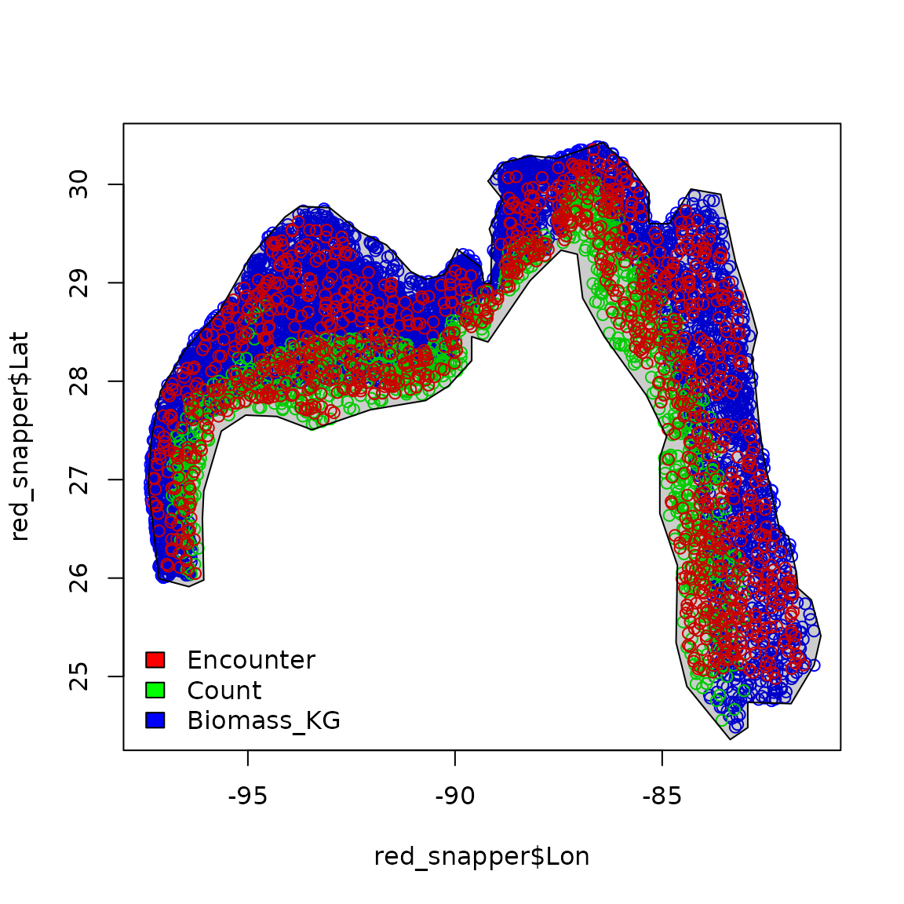
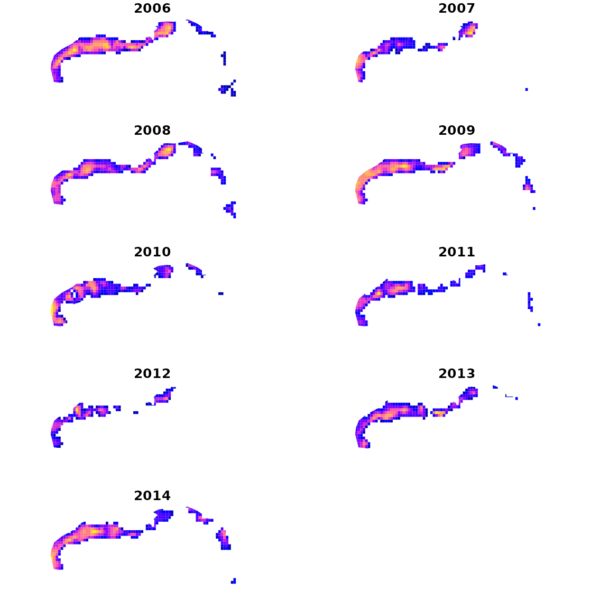
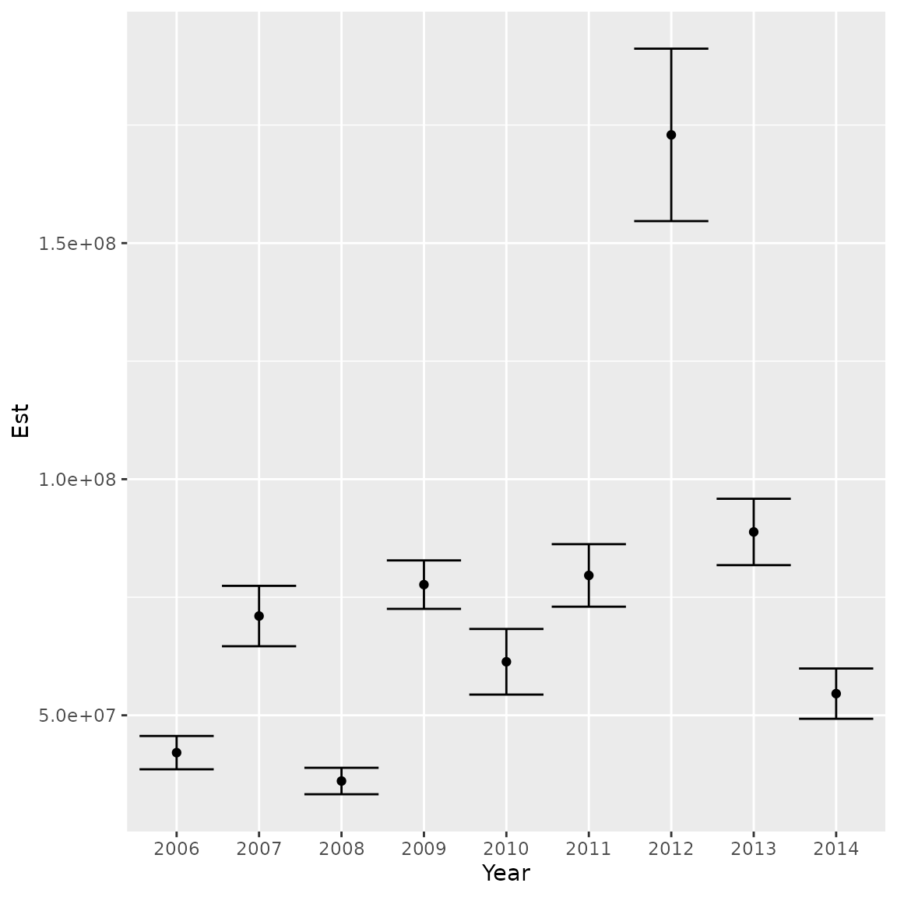

tinyVAST is an R package for fitting vector
autoregressive spatio-temporal (VAST) models using a minimal and
user-friendly interface. We here show how it can fit a species
distribution model fitted to multiple data types. In this specific case,
we fit to presence/absence, count, and biomass samples for red snapper
in the Gulf of Mexico. However, the interface is quite general and
allows combining a wide range of data types.
# Load data
data( red_snapper )
data( red_snapper_shapefile )
# Plot data extent
plot( x = red_snapper$Lon,
y = red_snapper$Lat,
col = rainbow(3)[red_snapper$Data_type] )
plot( red_snapper_shapefile, col=rgb(0,0,0,0.2), add=TRUE )
legend( "bottomleft", bty="n",
legend=levels(red_snapper$Data_type),
fill = rainbow(3) )
To fit these data, we first define the family for each
datum. Critically, we define the cloglog link for the Presence/Absence
data, so that the linear predictor is proportional to numerical density
for each data type. See Gruss and Thorson
(2019) or Thorson
and Kristensen (2024) Chap-7 for more details
# Define link and distribution for each data type
Family = list(
"Encounter" = binomial(link="cloglog"),
"Count" = poisson(link="log"),
"Biomass_KG" = tweedie(link="log")
)
# Relevel gear factor so Biomass_KG is base level
red_snapper$Data_type = relevel( red_snapper$Data_type,
ref = "Biomass_KG" )We then proceed with the other inputs as per usual:
# Define mesh
mesh = fm_mesh_2d( red_snapper[,c('Lon','Lat')], cutoff = 0.5 )
# define formula with a catchability covariate for gear
formula = Response_variable ~ Data_type + factor(Year) + offset(log(AreaSwept_km2))
# make variable column
red_snapper$var = "logdens"
# fit using tinyVAST
fit = tinyVAST( data = red_snapper,
formula = formula,
space_term = "logdens <-> logdens, sd_space",
spacetime_term = "logdens <-> logdens, 0, sd_spacetime",
space_columns = c("Lon",'Lat'),
spatial_domain = mesh,
time_column = "Year",
distribution_column = "Data_type",
family = Family,
variable_column = "var" )We then plot density estimates for each year:
# make extrapolation-grid
sf_grid = st_make_grid( red_snapper_shapefile, cellsize=c(0.2,0.2) )
sf_grid = st_intersection( sf_grid, red_snapper_shapefile )
sf_grid = st_make_valid( sf_grid )
# Extract coordinates for grid
grid_coords = st_coordinates( st_centroid(sf_grid) )
areas_km2 = st_area( sf_grid ) / 1e6
# Calcualte log-density for each year and grid-cell
index = plot_grid = NULL
for( year in sort(unique(red_snapper$Year)) ){
# compile predictive data frame
newdata = data.frame( "Lat" = grid_coords[,'Y'],
"Lon" = grid_coords[,'X'],
"Year" = year,
"Data_type" = "Biomass_KG",
"AreaSwept_km2" = mean(red_snapper$AreaSwept_km2),
"var" = "logdens" )
# predict
log_dens = predict( fit,
newdata = newdata,
what = "p_g")
log_dens = ifelse( log_dens < max(log_dens-log(100)), NA, log_dens )
# Compile densities
plot_grid = cbind( plot_grid, log_dens )
# Estimate and compile total
total = integrate_output( fit,
newdata = newdata,
area = areas_km2 )
index = cbind( index, total[c('Est. (bias.correct)','Std. Error')] )
}
colnames(plot_grid) = colnames(index) = sort(unique(red_snapper$Year))We then plot densities in each year

Similarly, we can plot the abundance index and standard errors
ggplot( data.frame("Year"=colnames(index),"Est"=index[1,],"SE"=index[2,]) ) +
geom_point( aes(x=Year, y=Est)) +
geom_errorbar( aes(x=Year, ymin=Est-SE, ymax=Est+SE) )
Runtime for this vignette: 36.07 secs